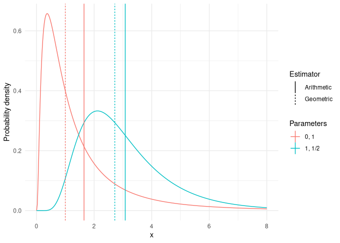
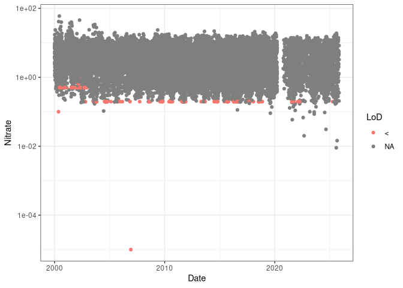
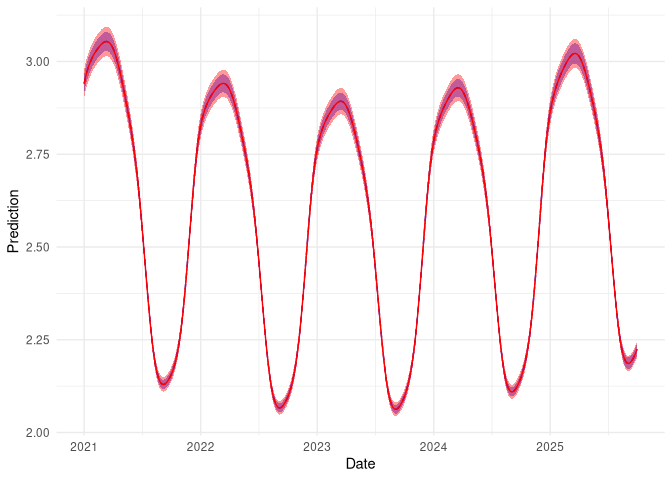

Modelling censored log-normal data in mgcv#
David L Miller
2026-03-11
Here I show how to model censored log-normally-distributed data. This kind of data often occurs in pollutant modelling where we have some concentration we are measuring which is a positive value, has a potentially skewed distribution, and might be censored at some limit for detection. In this case we can model the log of the response data as normally distributed, applying the appropriate transformation at the end of the analysis. Unfortunately this implies a geometric rather than arithmetic mean, which can be difficult to compare to other modelling results.
In this notebook, I’ll show show to perform this modelling using the
popular R package mgcv. You
can find out more about generalized additive models
here. The
methods shown here correct for the bias be incur by transforming
predictions, ensuring that results are comparable to other modelling
that uses the arithmetic mean.
Modelling preamble#
What does it mean to model log-normal data? What we are saying is that we have some variable, Y, which is \(\log_{b}\)-normally[1] distributed so \(Y\sim\log_{b}N(\mu,\sigma^{2})\) where \(\mu\) is the logarithm of the mean and \(\sigma^{2}\) is the base \(b\) logarithm of the variance of \(Y\). This is equivalent to defining a variable \(Z=b^{Y}\) where \(Z\sim N(\mu_{*},\sigma_{*}^{2})\). The log-normal distribution is useful in cases where \(Y\) is defined over the interval \((0,\infty]\) (i.e., \(Y>0\)).
Many kinds of sensor-collected data will be subject to some “limit of
detection” (LoD), where there is some point at which observations are
recorded to be zero because the value is smaller than the sensor can
detect, and/or the observation is arbitrarily high due to a saturation
effect. Censored normals can be used in this case. Core to their
formulation is the separation of the observation into censored and
non-censored groups, where the censored likelihood contributions are
evaluations of the cumulative distribution function (CDF) of the normal
distribution. Censored normal distributions are implemented in mgcv in
the cnorm function.
Arithmetic versus geometric means#
We can estimate estimate the expectation of \(Y\) (\(\mathbb{E}(Y)\)) by either an arithmetic or geometric mean (denoted \(\mathbb{E}_{A}(Y)\) or \(\mathbb{E}_{G}(Y)\), respectively). These are defined as:
Where the geometric “mean” corresponds to the median of the distribution. This difference is shown in the following plot
[1] Throughout I use \(\log_{b}\) to indicate logarithm to the base \(b\) since these calculations work regardless of the base used. When the distribution is referred to informally (i.e., non-mathematically) I drop the base.
library(ggplot2)
xx <- seq(0, 8, length.out=300)
dat <- data.frame(x = c(xx, xx),
dl = c(dlnorm(xx, 0, 1),
dlnorm(xx, 1, 1/2)),
pars = rep(c("0, 1", "1, 1/2"), c(300,300)))
pardat <- data.frame(pars = rep(c("0, 1", "1, 1/2"), c(2,2)),
method = rep(c("Arithmetic", "Geometric"),
2),
value = exp(c(0+1/2*1^2, 0,
1+1/2*1/2^2, 1)))
ggplot(dat) +
geom_line(aes(x=x, y=dl, group=pars, colour=pars)) +
geom_vline(aes(xintercept=value, lty=method, group=pars,
colour=pars), data=pardat) +
labs(x="x", y="Probability density", colour="Parameters",
lty="Estimator") +
theme_minimal()

Similarly, we define the arithmetic and geometric standard deviations as follows:
This is all fine in the simple case where we’re just estimating the distribution parameters, with no covariates involved. What about when we want to use covariates for prediction?
log-normal response in regression-like models#
We may want to model the mean via some linear model, for example when using a GLM or GAM. We decompose the mean as \(\mathbf{X}\boldsymbol{\beta}\), where \(\mathbf{X}\) is an \(n\times p\) design matrix and \(\boldsymbol{\beta}\) is a \(p\)-vector of coefficients to be estimated (where n is the number of observations).
In practice, one can simply assume that the log-response is normally distributed and fit a GLM-a-like (GAM/GLMM/GAMM/etc) with a normal distribution. This model is:
which is clearly modelling the geometric, rather than arithmetic mean (equivalently, we are modelling the median). This naturally extends to the case of random effects and therefore penalized smoothers (i.e., GLMMs, GAMs and GAMMs).
We can post hoc correct predictions to use the arithmetic mean using a multivariate version of the corrections above. These corrections lead to the following expressions:
where \(g(\boldsymbol{\beta})=b^{X\boldsymbol{\beta}}\) if \(b\) is the base we are working in and \(X\) is the design matrix for our model. \(D\) indicates the derivative operator with respect to \(\boldsymbol{\beta}\), with powers of \(D\) giving that order of derivative. \(\Sigma\) is the posterior covariance matrix for \(\boldsymbol{\beta}\) (see, e.g. Miller (2025) for further explanation of covariance matrices in the context of empirical Bayes modelling).
Analysis of pollutant data#
We now start our analysis. This code is based on examples by Mike Dunbar to illustrate fitting a GAMM with censored normal family to water quality time series from multiple sites (Harmonised Monitoring Scheme sites for England) to look at smoothed trends over time and the effects of seasonality. For each determinand we fit a separate model where site is a random effect and we use two temporal smoothers.
We begin by loading the requisite packages.
library(dplyr)
library(ggplot2)
library(mgcv)
library(tictoc)
library(lubridate)
library(tidyr)
library(purrr)
library(gratia)
library(stringr)
There are some non-CRAN packages required which we can install directly from GitHub, then load:
# for nice scales
remotes::install_github("christyray/sciscales")
library(sciscales)
# for the censored log normal helper functions
remotes::install_github("dill/mgcvUtils")
library(mgcvUtils)
Michael Dunbar at the Environment Agency pre-prepared data for this analysis using open data from EA (extracted using EA APIs).
# created in data_prep.R
load('data/HMS_open_data.rda')
head(samples)
# A tibble: 6 × 15
sample.samplingPoint.notation sample.samplingPoint.label sample.sampleDateTime
<chr> <chr> <dttm>
1 AN-26M31 HUNDRED FOOT RIVER EARITH… 2000-01-11 10:16:00
2 AN-26M31 HUNDRED FOOT RIVER EARITH… 2000-01-11 10:16:00
3 AN-26M31 HUNDRED FOOT RIVER EARITH… 2000-01-11 10:16:00
4 AN-26M31 HUNDRED FOOT RIVER EARITH… 2008-05-02 13:30:00
5 AN-26M31 HUNDRED FOOT RIVER EARITH… 2008-05-02 13:30:00
6 AN-26M31 HUNDRED FOOT RIVER EARITH… 2008-05-02 13:30:00
# ℹ 12 more variables: determinand.label <chr>, determinand.definition <chr>,
# determinand.notation <chr>, resultQualifier.notation <chr>, result <dbl>,
# codedResultInterpretation.interpretation <lgl>,
# determinand.unit.label <chr>, sample.sampledMaterialType.label <chr>,
# sample.isComplianceSample <lgl>, sample.purpose.label <chr>,
# sample.samplingPoint.easting <dbl>, sample.samplingPoint.northing <dbl>
This data has four determinands, for brevity here we’ll just look at
one: nitrate (where determinand.notation==0117 in our data).
samples <- samples |>
filter(determinand.notation == "0117")
Data checking#
Plotting the data, we can see how the limit of detection (red) changes over time.[1]
[1] The censored data is coded in the resultQualifier.notation columns
with a <.
samples |>
ggplot() +
geom_point(aes(x = sample.sampleDateTime,
y = result,
group = sample.samplingPoint.notation,
colour = resultQualifier.notation)) +
scale_y_log10() +
labs(x="Date", y="Nitrate", colour="LoD") +
theme_bw()

If we tabulate the LoD values we can see one is certainly more common than the others:
samples |>
# can comment out
filter(resultQualifier.notation == '<') |>
group_by(result) |>
summarise(n = n())
# A tibble: 9 × 2
result n
<dbl> <int>
1 0.00001 1
2 0.1 1
3 0.192 1
4 0.195 8
5 0.196 90
6 0.5 32
7 0.504 1
8 0.648 1
9 0.996 1
The predominant LoD in the original data is 0.196 although some earlier data it is 0.5. For simplicity in this analysis, we use 0.196.
Final data prep#
When we log-transform we can’t use zero as the lower bound for censored values we just choose a very small value. We use a value 2 orders of magnitude below lowest limit of detection.
nearly.zero <- 0.000001
log.zero <- log10(nearly.zero)
Create some extra columns, ensure categorical variables are factors.
samples <-
samples |>
mutate(DATE = date(sample.sampleDateTime),
year = year(DATE),
month = month(DATE),
samplingPoint.F = as.factor(sample.samplingPoint.notation),
det.code.desc = paste(determinand.notation, determinand.label, sep = '-'),
DATE_DEC = round(decimal_date(DATE),2),
MEAS_SIGN = replace_na(resultQualifier.notation, '='),
log.meas.upper = log10(result + nearly.zero),
log.meas.lower = if_else(MEAS_SIGN == '<', log.zero, log.meas.upper),
censored = ifelse(MEAS_SIGN == '<', TRUE, FALSE),
# these two lines are because for the not artificially censored data,
# the ..original columns won't be populated yet
result.original = result,
qualifier.original = resultQualifier.notation
)
Finally we create the response matrix, which is two columns (if entries
are the same there was no censoring, if they are different there was
censoring; see ?mgcv::cnorm):
samples$y <- cbind(samples$log.meas.lower, samples$log.meas.upper)
head(samples$y)
[,1] [,2]
[1,] 1.1172713 1.1172713
[2,] 0.8656961 0.8656961
[3,] 0.7259117 0.7259117
[4,] 0.7686382 0.7686382
[5,] 0.7558749 0.7558749
[6,] 0.7810370 0.7810370
Note that although we pass a matrix to mgcv as the response, we only
have a univariate response variable, the second column is only for
indicating censoring to the code.
Modelling#
We can now fit our generalized additive model. We want to fit a model of the following form:
where \(i\) indexes the observations which have nitrate level \(Y_i\) on date \(t_i\) in month \(m_i\) and station \(z_i\) (where \(\beta_{z}\) is a random intercept for station \(z\)). Generic smoothers are denoted \(s()\). We want to look at any common trend across our monitoring sites, which will be in the terms \(s(t_i)\) and \(s(m_i)\). We use \(b=10\) for this modelling, though any scientifically appropriate base would be usable with these functions/methods.
In practice we fit:
Here we will use bam and
fREML for speed here to
show that these methods work with large data approaches too.
We need to setup knots for the monthly smoother. Note that we just need
to specify the first and last knot, then mgcv will fill in
evenly-spaced knots in that range. See this useful blog post by Gavin
Simpson about cyclic
smoothing.
# for month cyclic cubic spline
sknots <- list(month=c(0.5, 12.5))
We can now fit the model
b <- bam(y ~ s(DATE_DEC, bs = 'cr') +
s(month, bs = 'cc') +
s(samplingPoint.F, bs = 're'),
method = 'fREML',
family = clognorm(base=10),
knots = sknots,
data = samples)
b_uncorrected <- bam(y ~ s(DATE_DEC, bs = 'cr') +
s(month, bs = 'cc') +
s(samplingPoint.F, bs = 're'),
method = 'fREML',
family = cnorm(),
knots = sknots,
data = samples)
Looking at a summary output as usual. In particular we can see that we
used the new clognorm family (see Family: line). This shows the base
(10) and the standard deviation result (compare to the second summary
from the cnorm model).
summary(b)
Family: clog10norm(0.207)
Link function: identity
Formula:
y ~ s(DATE_DEC, bs = "cr") + s(month, bs = "cc") + s(samplingPoint.F,
bs = "re")
Parametric coefficients:
Estimate Std. Error t value Pr(>|t|)
(Intercept) 0.44305 0.05678 7.803 6.35e-15 ***
---
Signif. codes: 0 '***' 0.001 '**' 0.01 '*' 0.05 '.' 0.1 ' ' 1
Approximate significance of smooth terms:
edf Ref.df F p-value
s(DATE_DEC) 8.782 8.986 64.05 <2e-16 ***
s(month) 6.711 8.000 328.23 <2e-16 ***
s(samplingPoint.F) 50.957 51.000 1260.35 <2e-16 ***
---
Signif. codes: 0 '***' 0.001 '**' 0.01 '*' 0.05 '.' 0.1 ' ' 1
R-sq.(adj) = 0.433 Deviance explained = 77.4%
fREML = 79415 Scale est. = 1 n = 19596
Family: cnorm(0.207)
Link function: identity
Formula:
y ~ s(DATE_DEC, bs = "cr") + s(month, bs = "cc") + s(samplingPoint.F,
bs = "re")
Parametric coefficients:
Estimate Std. Error t value Pr(>|t|)
(Intercept) 0.44305 0.05678 7.803 6.35e-15 ***
---
Signif. codes: 0 '***' 0.001 '**' 0.01 '*' 0.05 '.' 0.1 ' ' 1
Approximate significance of smooth terms:
edf Ref.df F p-value
s(DATE_DEC) 8.782 8.986 64.05 <2e-16 ***
s(month) 6.711 8.000 328.23 <2e-16 ***
s(samplingPoint.F) 50.957 51.000 1260.35 <2e-16 ***
---
Signif. codes: 0 '***' 0.001 '**' 0.01 '*' 0.05 '.' 0.1 ' ' 1
R-sq.(adj) = 0.433 Deviance explained = 77.4%
fREML = 79415 Scale est. = 1 n = 19596
We note there are no differences in the estimated degrees of freedom
(edf), fREML score etc.
Making predictions#
We want to make some predictions over the date range 2000 to 2025 (no extrapolation into the future). We are interested in patterns with and without the seasonality (month) component. We are not interested in per-site predictions (and we’ll exclude that effect in our predictions), so for now we just use one site.
predgrid <- data.frame(date = seq(ymd("2021-01-01"), ymd("2025-09-30"), by=1),
samplingPoint.F = samples$samplingPoint.F[1])
predgrid$DATE_DEC <- decimal_date(predgrid$date)
# get decimal months for interpolation
predgrid$month <- (decimal_date(predgrid$date)-year(predgrid$date)) * 12
In the above code we used the clognorm response family, which is
provided in the mgcvUtils package. Internally this package fits the
same model as cnorm but implements a prediction method that corrects
the results, provided we use the type="response" argument to
predict.
All this means that we can use the usual predict method and get the
corrected predictions transparently (provided we ask for results on the
response scale). For example:
predgrid$pred <- predict(b, predgrid, type="response",
exclude=c("s(samplingPoint.F)", "s(DATE_DEC)"))
We can add a confidence band around this plot by manually calculating
the upper and lower bounds, but mgcvUtils also provides a function to
do this for you in an analogous way to the
gratia package, via the
fitted_values_clognorm function[1].
[1] Note that the fitted_values function in gratia will not work
with the clognorm family at this time.
fv <- fitted_values_clognorm(b, predgrid, scale="response",
exclude="s(samplingPoint.F)")
head(fv)
.row date samplingPoint.F DATE_DEC month .fitted .se
1 1 2021-01-01 AN-26M31 2021.000 0.00000000 2.940149 0.002760783
2 2 2021-01-02 AN-26M31 2021.003 0.03287671 2.944586 0.002765074
3 3 2021-01-03 AN-26M31 2021.005 0.06575342 2.948817 0.002769199
4 4 2021-01-04 AN-26M31 2021.008 0.09863014 2.952850 0.002773164
5 5 2021-01-05 AN-26M31 2021.011 0.13150685 2.956694 0.002776974
6 6 2021-01-06 AN-26M31 2021.014 0.16438356 2.960360 0.002780632
.lower_ci .upper_ci
1 2.903744 2.977011
2 2.908070 2.981561
3 2.912194 2.985900
4 2.916124 2.990037
5 2.919871 2.993982
6 2.923443 2.997743
We can compare the trend from the corrected predictions alongside the uncorrected. In this case we first must construct covariance matrix for the transformed standard error (using the delta method):
fv_gm <- fitted_values(b_uncorrected, predgrid, exclude="s(samplingPoint.F)")
# partial correction
Xp <- predict(b_uncorrected, predgrid, type="lpmatrix")
tpred <- 10^predict(b_uncorrected, predgrid, type="response")
base <- 10
Dg <- log(base) * sweep(Xp, 1, tpred, "*")
fv_gm$.se <- sqrt(diag(tcrossprod(Dg%*%vcov(b_uncorrected), Dg))/length(b_uncorrected$y))
crit <- gratia:::coverage_normal(0.95)
fv_gm[[".lower_ci"]] <- fv_gm[[".fitted"]] - (crit * fv_gm[[".se"]])
fv_gm[[".upper_ci"]] <- fv_gm[[".fitted"]] + (crit * fv_gm[[".se"]])
We can now compare these graphically:
ggplot(fv) +
geom_ribbon(aes(x=DATE_DEC, ymin=10^.lower_ci, ymax=10^.upper_ci),
fill="blue", alpha=0.4, data=fv_gm) +
geom_line(aes(x=DATE_DEC, y=10^.fitted), lty=2, data=fv_gm, colour="blue") +
geom_ribbon(aes(x=DATE_DEC, ymin=.lower_ci, ymax=.upper_ci),
fill="red", alpha=0.4) +
geom_line(aes(x=DATE_DEC, y=.fitted), colour="red") +
labs(x="Date", y="Prediction") +
theme_minimal()

Here the red line/band indicate the corrected predictions with uncertainty, blue is the uncorrected predictions. We can’t see much difference in the mean estimates (red line overlaps blue) but there is a considerable reduction in uncertainty.
Conclusion#
We can now correct for the bias incurred by using a geometric mean
estimator when we really want to use an arithmetic mean. To do this we
use the clognorm family as provided by the mgcvUtils package. Once
we’ve fitted the model, we can use the standard predict method or to
save time, we can use fitted_values_clognorm.